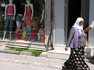
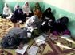
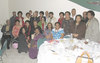
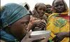

- 16 اردیبهشت 1387
زنان کارگر در جنبش کارگری
پروین اشرفی
- 31 فروردین 1387

هما مداح
- 16 فروردین 1387
نفيسه آزاد
- 27 دی 1386
ترجمه : فریبا شهلایی
- 30 آذر 1386

نگاهی به فعالیتهای صورت گرفته توسط زنان ترک برای برابری جنسیتی در سطح قانون و جامعه
- 3 آبان 1386
گروه ترجمه رسانه کمپین
- 4 مهر 1386

آنا. س. ساسمن / مترجم : فریبا شهلایی
- 23 شهریور 1386
نگاهی به تغییر وضعیت زنان در قوانین آفریقای جنوبی
- 31 مرداد 1386
- 12 مرداد 1386

- 6 تیر 1386
ترجمه ی زری طبائی
- 20 خرداد 1386
مصاحبه ای با «فائزه جاما محمد »رئیس EQUALITY NOE در منطقه آفریقا درباره پیشرفت کمپینی برای تصویب کامل معاهده منشور حقوق بشر در زمینه حقوق زنان افریقا(ACHPR)
- 15 خرداد 1386
لئونارد ماینکا / نوامبر 2005
- 10 خرداد 1386
گفتگو با نادیا آیت زای، استاد حقوق خانواده دانشگاه الجزیره / مترجم سمیه فرید
- 2 خرداد 1386

پ.امرانا جلال(1)/ برگردان : فروغ قره داغی و جوانه جواهری
- 6 اردیبهشت 1386

پ.امرانا جلال/ مترجمان : فروغ قره داغی و جوانه جواهری
- 13 فروردین 1386
ترجمه ی زهرا عمرانی
- 18 اسفند 1385
مبارزات زنان مراکشی برای تغییر قوانین تبعیض آمیز
- 11 بهمن 1385
مترجم : نوشین کشاورزنیا
- 2 بهمن 1385
مصاحبه اي با پينار ايلککاراسان از گروه «زنان براي حقوق انساني زنان- راه هاي تازه»
- 22 دی 1385
روستائیان در کمپینی علیه نقص عضو تناسلی زنان
- 6 دی 1385
گلبرگ باشی/مترجم:زهرا عمرانی
- 27 آذر 1385
ترجمه: نوشین کشاورزنیا
- 14 آذر 1385
ترجمه:زهرا عمرانی
- 10 آبان 1385
گفت و گو با رئيس انجمن زنان بحرين:
ترجمه:نيلوفر انسان
- 26 مهر 1385

ترجمه و تلخیص:گیلدا فرید مجتهدی
- 13 مهر 1385
ترجمه و تالیف: فرناز سیفی
- 4 مهر 1385
مترجم:زهرا عمرانی
- 4 شهریور 1385
- 4 شهریور 1385